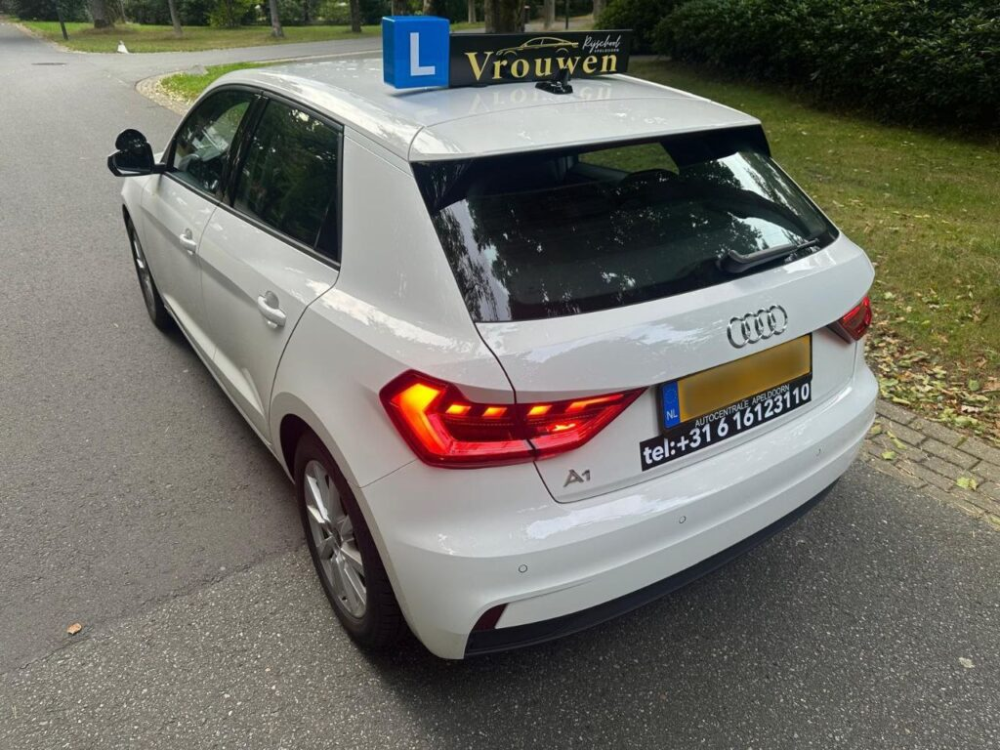
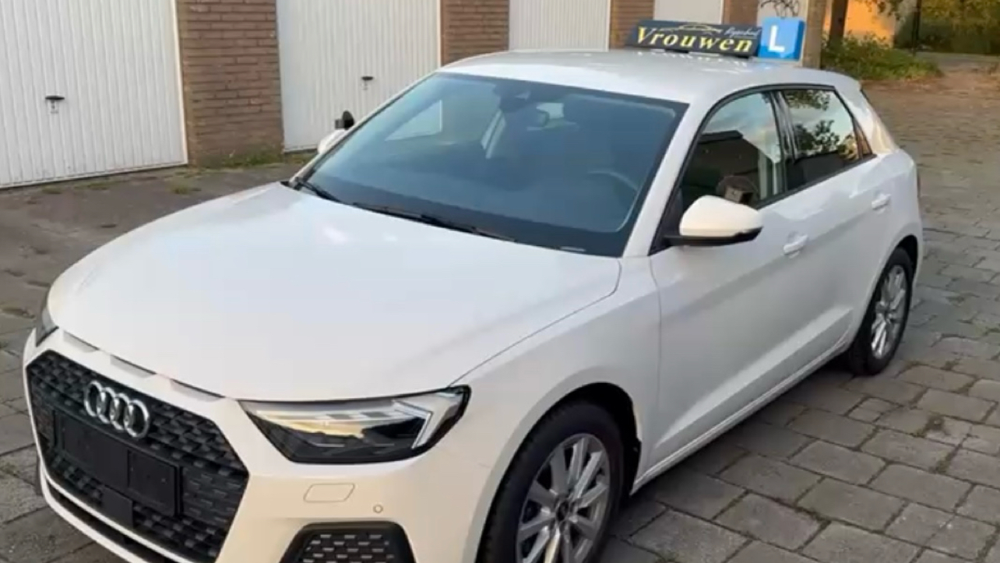

Rijschool voor vrouwen in Apeldoorn
Geen haast.
Wel dat roze pasje.
Automaatrijles alleen voor vrouwen, met een vaste vrouwelijke instructrice. Rustige uitleg, duidelijke structuur en alle ruimte voor spanning.
5,0 op Google, 11 reviews

Herken je jezelf hierin?
Of je nu nog nooit achter het stuur hebt gezeten of het vertrouwen bent kwijtgeraakt: je bent welkom. Zonder oordeel, in jouw tempo.
-
Je eerste rijles
Nog nooit gereden? We beginnen bij de basis: de auto, de bediening en rustig wennen aan de weg. In een automaat, dus zonder gedoe met schakelen.
-
Je bent 16,5 jaar
Met 2toDrive mag je al rijlessen nemen vanaf 16,5 jaar en op je 17e examen doen. Hoe dat werkt, lees je verderop.
-
Lang niet gereden
Je hebt je rijbewijs al, maar het is jaren geleden. Met opfrislessen word je stap voor stap weer zeker op de weg.
-
Spanning of angst
Na een ongeluk, bij faalangst of gewoon zenuwen. Marie heeft ervaring met spanning en bijzondere situaties, en begeleidt je met geduld en respect.

Rust en vertrouwen, vanaf de eerste les
Wij geven alleen automaatrijlessen, en alleen aan vrouwen. Die keuze is bewust: zo ontstaat een les waarin vertrouwen, veiligheid en comfort voorop staan.
De oprichter werkt samen met Marie, een toegewijde en geduldige instructrice. Je rijdt altijd met haar. Ze legt rustig uit, herhaalt waar het nodig is en laat je merken wanneer iets goed gaat.
- Alleen vrouwen
- Vaste vrouwelijke instructrice, van proefles tot examen.
- Alleen automaat
- Niet schakelen, meer aandacht voor het verkeer.
- Geen haast, wél structuur
- Lessen op jouw niveau, zonder onnodig extra lessen.
Begin met een proefles
Benieuwd of we bij je passen? In de proefles maak je kennis met de aanpak, met Marie en met het rijden zelf. Volledig vrijblijvend: pas na afloop beslis je of je verdergaat.
-
1
Kennismaken
In een ontspannen sfeer. We kijken naar jouw niveau, ervaring en manier van leren.
-
2
De auto leren kennen
Persoonlijke uitleg over de auto en de bediening, in je eigen tempo.
-
3
Zelf rijden
Je ervaart rustig wat je al kunt. Veel leerlingen voelen hier al meer controle.
-
4
Jouw lesplan
Direct na de les krijg je een lesplan op maat, op basis van je niveau en doelen.
-
5
Al je vragen
Er is ruimte voor alles waar je over twijfelt. Geen vraag is te veel.
Al rijden vanaf 16,5 jaar
Met 2toDrive begin je eerder en doe je meer rijervaring op. Tot je 18e rijd je met een coach naast je, bijvoorbeeld een ouder of iemand die jij kiest.
-
16
Theorie-examen
-
16,5
Start met rijlessen
-
17
Praktijkexamen
daarna begeleid rijden
-
18
Zelfstandig rijden
zonder coach
Dankzij de lieve, geduldige en gezellige Marie heb ik mijn rijbewijs behaald. Zo dankbaar voor de wijze lessen, leuke gesprekken en natuurlijk het roze pasje🥳
“Top vrouw Marie. Vanaf de eerst dag gelijk al een klik, ze is heel rustig en legt dingen heel goed uit, ik heb mijn vertrouwen weer terug gekregen,en dat voelt fijn als ze in mij geloven en zeggen je kunt het wel. Ik raad deze rijschool aan.😊”
“Ik heb mijn rijbewijs al 5 jaar, maar had altijd moeite met fileparkeren omdat dit mij destijds verkeerd en te ingewikkeld was uitgelegd. Bij deze rijschool heb ik eindelijk de juiste begeleiding gekregen. De instructrice is heel geduldig, legt alles duidelijk uit en geeft ook nog eens waardevolle tips en informatie die je echt verder helpen. Dankzij haar begrijp ik nu eindelijk hoe het moet en voel ik me een stuk zekerder achter het stuur. Een echte aanrader voor iedereen die goed en vertrouwd wil leren rijden!”
“Gisteren mijn proefles gehad en ondanks mijn spanning aan het begin, voelde ik mij snel op mijn gemak. Marie is heel kalm, legt rustig en duidelijk dingen uit en helpt je met je spanning om te gaan! Toppertje!”
“Ik had na het behalen van mijn rijbewijs tussentijds bijna 10 jaar niet meer gereden. Nu heb ik weer bij jullie opfris rijles gevolgd en dat ging heel goed. De rijinstructrice is heel vakkundig op mijn rijvaardigheden ingegaan en legt heel rustig en duidelijk uit. Ik hoef niet te stressen achter het stuur, ik leerde op een gemakkelijke manier om mijn rijvaardigheden te oefenen, zodat ik weer zelfverzekerd en veilig op weg kan.”
“Wat ik ook heel fijn vind, is dat we aan het begin van elke les samen bespreken waar we die les aan gaan werken. Aan het einde van de les geven we cijfers aan de onderdelen die we hebben geoefend. Zo kan ik precies zien wat al goed gaat en waar ik nog extra aandacht aan moet besteden.”
“Super fijne rijschool. Marie neemt echt de tijd en helpt je om zelfvertrouwen te ontwikkelen achter het stuur. Absoluut een aanrader voor iedere vrouw die wil leren rijden!”
Gemiddeld 5 sterren uit 11 Google-reviews.
Zet de eerste stap
Bel of app voor een proefles, of als je eerst iets wilt vragen. We denken graag met je mee.
Bel 06 16123110- 06 16123110
- Adres
- Gentiaanstraat 1A, 7322 BA Apeldoorn
tegenover Euromaster - Bereikbaar
- Maandag t/m zondag, 08:00 tot 18:00